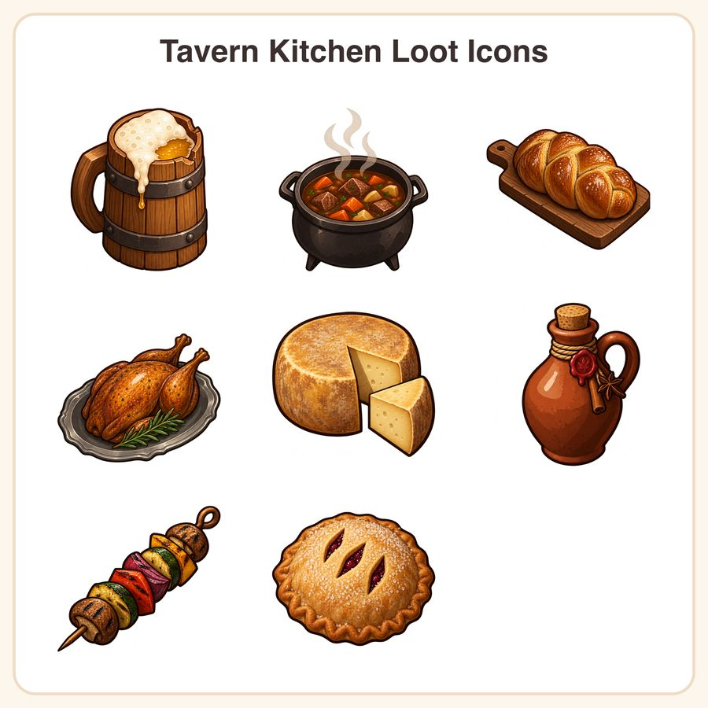

$5.99
Buy nowGet it on itch.ioView on EtsyStock your game's inventory with hand-crafted tavern fare! This 8-icon Tavern Kitchen Loot set brings warm, cel-shaded food and drink items straight into your RPG, cooking sim, or survival crafting UI — no redrawing needed. What's included: • 8 unique loot icons: honey ale tankard, cast-iron stew pot, braided bread loaf, roast game bird, wedge-cut cheese wheel, corked cider jug, veggie skewer, berry hand pie • Each icon in PNG (fully scalable, editable) plus transparent PNG at 128px, 256px, 512px, and 1024px • 40 files total, organized in labeled folders, zipped for easy download (~15MB) Style: warm tavern palette of ember orange, oak brown, cream, and sage. Two-tone cel shading, single hard highlight, 3px dark-umber outline, top-left light source, centered three-quarter view built on a 128px grid so every icon reads clearly even at 32px. How to use: Drop straight into Godot, Unity, RPG Maker, or any engine's UI/inventory system. PNG scale cleanly for any resolution; PNGs are ready to import at your chosen size. License: Personal and small-business commercial use included — use in up to 500 units of a game, app, or product. Reselling, redistributing, or sharing the raw files (as-is or repackaged) is not permitted. Honest note: These icons were designed in-house by our shop, using AI-assisted tools as part of our creative workflow, then refined and finalized by hand. ✨ Instant download after purchase — no waiting, start building your loot table today!